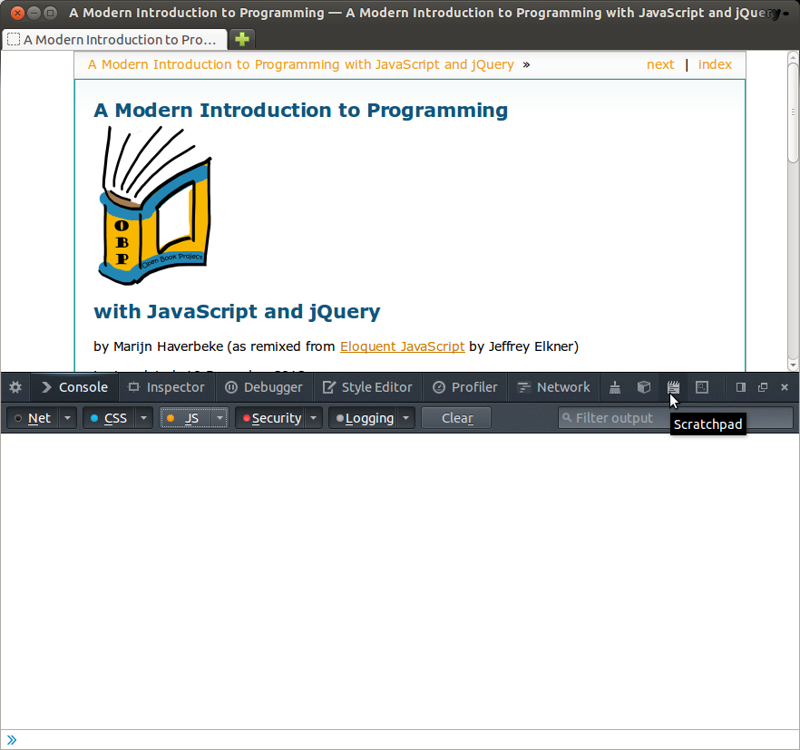

What follows are instructions learning to use a JavaScript development environment for use with this book. I use Ubuntu GNU/Linux for both development and testing of the book, so it is the only system about which I can personally answer setup and configuration questions.
Since the default browser on Ubuntu 14.04 is Firefox, that is the browser I will use to all examples in the book.
In the spirit of software freedom and open collaboration, please contact me if you would like to maintain a similar appendix for your own favorite system. I’d be more than happy to link to it or put it on the Open Book Project site, provided you agree to answer user feedback concerning it.
Thanks!
Select Tools –> Web Developer –> Web Console or press Cntrl + Shift + K to open the Web Console.
You should see a window at the bottom of your browser that looks like this:

The mouse in this screenshot is over a notebook icon that opens a JavaScript scratchpad.
One basic approach to running JavaScript code is to put it inside a script element in an HTML document, and then to use the JavaScript alert function to display results.
<!DOCTYPE html>
<html lang="en">
<head>
<meta charset="utf-8">
<title>Minimal HTML Document with JavaScript Element</title>
</head>
<body>
<script type="text/javascript">
</script>
</body>
</html>
Click on minjs.html download this minimal file.